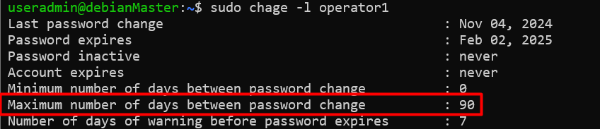
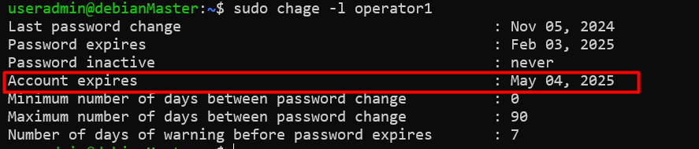
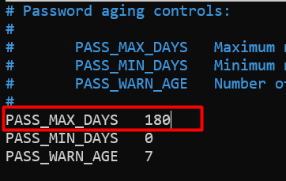

Manajemen Password User
- Seperti yang kita ketahui,
passwordtermasuk salah satu bagian yang penting dalamkeamanankita sering mendengar tentang himbauan untuk menggantipasswordsecara berkala. - Didalam system operasi Linux pun sama, kita dapat melakukan manajemen
passwordseperti mengatur umur dan waktu kadaluarsa sebuahpassword, agar memaksauseruntuk melakukan perubahan agar system tetap aman. - Password sendiri ternkripsi dan tersimpan di /etc/shadow
Command Mengatur Masa aktif Password
Untuk dapat mengatur masa aktif password sebuah user kita dapat menggunakan perintah chage
ditambah dengan beberapa opsi. Berikut contohnya:
- -m 0 :-m (min days) Menentukan waktu minimum (dalam hari) antara perubahan kata sandi. 0 artinya
pengguna bisa mengganti kata sandi kapan saja tanpa ada batasan waktu minimum. Jika misalnya
-m 10Artinya kata sandi baru bisa diubah dalam10 hari - -M 90 : -M (Max days) Waktu maksimum (dalam hari) kata sandi bisa digunakan sebelum kadaluwarsa. Pada perintah ini masa kadaluwarsa setelah 90 hari.
- -W 7 : -W (Warning) Mengatur pemberitahuan sebelum kata sandi kadaluwarsa.
7berarti pengguna akan menerima peringatan 7 hari sebelum kata sandinya kadaluarsa. - -I 14 : -I (inactive) Menentukan jumlah hari setelah kata sandi kadaluwarsa sebelum akun di nonaktifkan.
14artinya akun akan di-nonaktifkan 14 hari setelah kata sandi kadaluwarsa jika belum diperbarui - user03 : user yang akan diatur masa aktif kata sandinya.
Kita dapat memaksa user untuk mengganti kata sandi ketika mereka login.
Untuk melihat masa aktif sebuah user kita dapat menggunakan perintah:
root@debianMaster:~# chage -l user03
Last password change : Oct 27, 2024
Password expires : Jan 25, 2025
Password inactive : Feb 08, 2025
Account expires : never
Minimum number of days between password change : 0
Maximum number of days between password change : 90
Number of days of warning before password expires : 7
Kita pun dapat mengunci sebuah akun ketika masa aktifnya sudah lewat.
Untuk membuka akun yang dikunci gunakan opsi -U
kita dapat juga melakukan penguncian dan juga mengatur tanggal kadaluarsa akun, tanggal kadaluarsa akun menggunakan
format YYYY-MM-DD.
studi kasus Berikut:
Studi_kasus
Situasi: Seorang admin sistem bernama Budi mengelola akses pengguna di sebuah perusahaan. Budi memiliki akun bernama user03 untuk seorang karyawan kontrak bernama Andi. Kontrak kerja Andi akan berakhir pada tanggal 5 Oktober 2019. Budi ingin memastikan bahwa akun Andi:
Akan dikunci agar tidak bisa diakses secara langsung, dan Secara otomatis kedaluwarsa setelah kontrak berakhir, sehingga tidak bisa digunakan lagi. Tindakan yang Diambil: Untuk mengatur ini, Budi menjalankan perintah berikut:
-L: Mengunci akun user03, jadi mulai saat itu, Andi tidak bisa login ke sistem.-e 2019-10-05: Mengatur agar akun Andi akan kedaluwarsa pada 5 Oktober 2019.
Dengan demikian, akun Andi menjadi tidak aktif dan tidak bisa digunakan lagi mulai dari tanggal kedaluwarsa tersebut.
Apa yang Terjadi Setelah Tanggal Kedaluwarsa?
Pada 6 Oktober 2019 dan seterusnya:
1. Akun tetap terkunci karena perintah -L (lock) sudah diterapkan.
2. Akun kadaluwarsa sejak tanggal 5 Oktober 2019, artinya akun ini tidak bisa digunakan lagi untuk login atau diakses tanpa tindakan khusus dari admin.
Apa yang Harus Dilakukan Jika Kontrak Andi Diperpanjang?
Misalnya, jika kontrak Andi diperpanjang hingga 5 Desember 2019, Budi perlu:
- Mengubah tanggal kedaluwarsa akun agar sesuai dengan tanggal perpanjangan, dan
Membuka kunci akun agar Andi bisa login kembali.
Perintah yang dapat dijalankan adalah:
Contoh Kasus Tambahan
Misalkan admin lupa bahwa akun user03 sudah tidak aktif, dan seseorang secara
tidak sengaja membuka kunci akun tersebut tanpa mengubah tanggal kedaluwarsa.
Dalam hal ini, karena akun sudah mencapai tanggal kadaluwarsa,
meskipun kunci akun dibuka, pengguna tetap tidak akan bisa login
sehingga akses tetap terjaga.
Kesimpulan
Meskipun akun sudah dikunci, menambahkan tanggal kedaluwarsa adalah langkah pencegahan tambahan untuk
memastikan akun tersebut benar-benar dibatasi dan tidak aktif secara permanen di
luar masa yang dibutuhkan.
Kita dapat melakukan konfigurasi masa aktif password secara default dengan mengedit file /etc/login.defs.
- Parameter PASS_MAX_DAYS mengatur masa aktif maksimal dari sebuah password.
- Parameter PASS_MIN_DAYS mengatur waktu minimum perubahan antar kata sandi.
- Parameter PASS_WARN_AGE mengatur berapa hari sebelum kadaluarsa muncul peringatan.
Nologin Shell
Nologin shell ialah shell pengganti untuk user account yang tidak membutuhkan shell secara interactive.
Shell ini biasanya digunakan oleh user dari sebuah service untuk menjalankan perintah/command. Merupakan sebuah
best practice ketika disable akun untuk bisa login ke system, ketika user tersebut tidak membutuhkannya.
Sebagai contoh, sebuah mail server membutuhkan sebuah account untuk menyimpan mail dan password untuk autentikasi.
user tersebut tidak membutuhkan untuk login secara langsung ke dalam system. Hal ini penting juga untuk dilakukan
untuk keamanan.
Agar user tidak dapat login secara langsung kedalam system,
dapat dilakukan dengan cara mengubah login shell dari sebuah user menjadi /sbin/nologin.
root@debianMaster:~# usermod -s /sbin/nologin user03
root@debianMaster:~# su - user03
This account is currently not available.
Praktikum Mandiri
- Login ke system dan gunakan user yang telah dikonfigurasi sudo
- kunci
useroperator1` - Tes
loginsebagaioperator1.Logingagal karena useroperator1telah kita kunci. - buka
kunciuseroperator1 - Tes
loginkembali sebagaioperator1
Loginberhasil karena useroperator1telah dibuka - ubah agar
kata sandioperator1masa aktifnya ke 90 hari
- Verifikasi apakah masa aktif
kata sandiuseroperator1telah berubah  - Paksa user
operator1untuk mengubahkata sandiketika login - Tes login kembali menggunakan user
operator1dan ubahkata sandimenjadi12345678pada bagian current password masukkan password sebelumnyauseradmin@debianMaster:~$ su - operator1 Password: You are required to change your password immediately (administrator enforced). Changing password for operator1. Current password: New password: Retype new password: useradmin@debianMaster:~$ exit
pada bagian new password masukkan password baru yaitu12345678 -
Ubah tanggal kadaluarsa user
operator1menjadi 180 hari dari tanggal hari ini.- Menentukan tanggal di 180 hari kedepan
- Set tanggal kadaluarsa user
operator1useradmin@debianMaster:~$ sudo chage -E 2025-05-04 operator1 useradmin@debianMaster:~$ sudo chage -l operator1

- Menentukan tanggal di 180 hari kedepan
-
Ubah masa aktif password semua user menjadi
180hari. Hal ini dapat dilakukan dengan mengedit file/etc/login.defs
Warning
Kerjakan dan buat dokumentasi pengerjaan dan upload di exam Mysmk